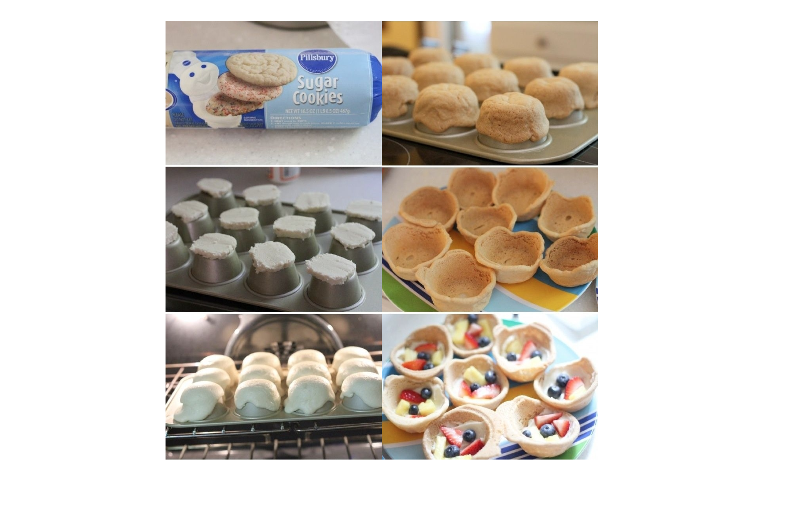
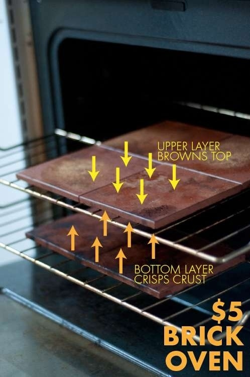

Yogurt can be substituted for almost anything (Butter, milk, oil, etc.).
Want to make the perfect ice cream sandwich? Here's how:
Bake cookies on an upside-down muffin tin to make cookie bowls.

Use unglazed ceramic tile to make your own homemade brick oven.

Layering a slice of lemon on a cut avocado will keep it green for longer
Discover more lifehacks videos...